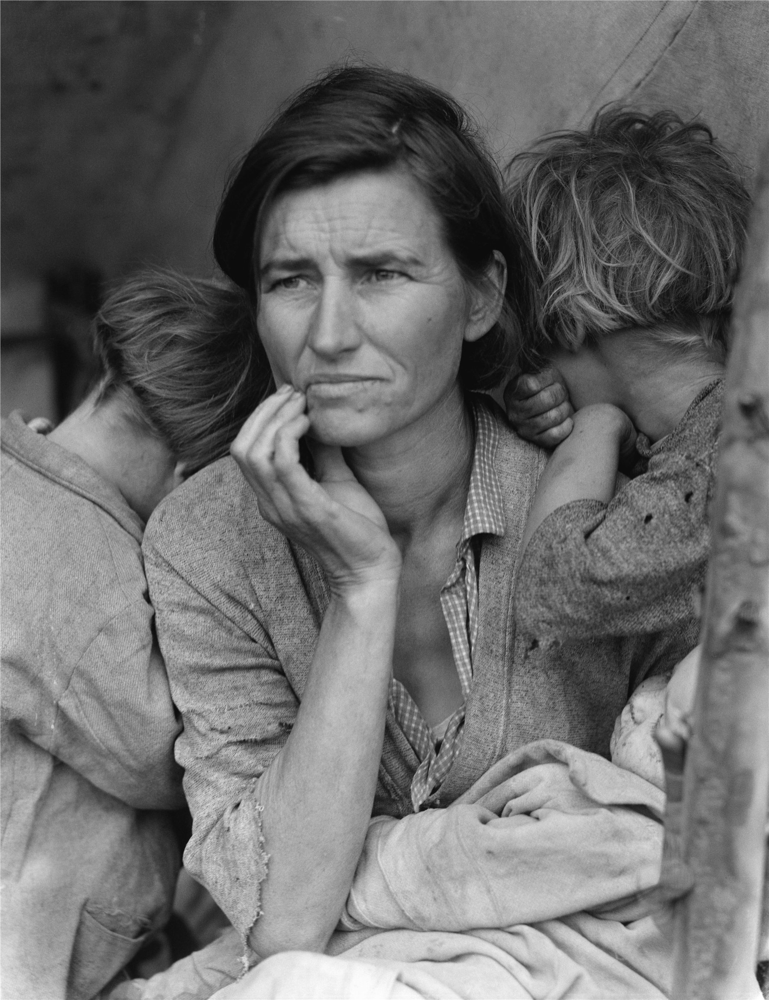

一顶漏风的帐篷下，一个三十出头、却被风霜刻老了的母亲，单手撑着下巴，望向画框之外某处不可知的远方。两个孩子把脸埋进她的肩膀、背对镜头；怀里的婴儿睡着，浑然不知。她没有看你，也没有向你乞求——正是这份不乞求，让这张脸成了整个大萧条年代的脸。这是纪实摄影史上最著名的一张照片。
整张照片是一个稳稳的三角形（金字塔式构图）：母亲的头是塔尖，她摊开的身体和膝上的婴儿是宽阔的塔基。三角形是所有构图里最稳定的形状——它给这幅满是动荡与不安的画面，钉下了一个沉默而坚固的底座。
两个孩子背对镜头、把脸藏起，这是神来之笔：他们像两道括号，把所有视线向内收拢、推向母亲的脸。画面里唯一交出表情的，只有她一个人——于是她独自承担了整个家、整个时代的重量。
她的眼睛落在上三分之一线上（三分法），视线却引向画框之外的左侧——人物看向画外，天然制造出悬而未决的张力：她在望着一个看不见的、不确定的未来。右缘那根斜插的帐篷杆，是画面里唯一的硬直线，暗示着这个「家」的简陋与临时。
黑白照片没有颜色，但它有影调（明度）——这就是它的「配色」。判断一张黑白片高不高级，要看它的全影调范围：是否同时拥有扎实的纯黑、干净的纯白，以及之间丰富的灰阶过渡。这正是安塞尔·亚当斯「区域系统」（Zone System）的核心：把从全黑到全白分成 0–X 共 11 个区。
这张照片影调完整而克制：Zone 0–I 的纯黑（帐篷暗处、她的发）沉到底，给画面重量；Zone V 的中灰是她的肤色基准（黑白人像里皮肤多落在中灰偏亮，是全片的「锚点」）；Zone VIII–IX 的亮部（婴儿襁褓、衣袖高光）把视线轻轻往中心带。深处压得住、亮处透得出气，而最关键的脸留在中间调——于是那些忧虑的皱纹、紧抿的嘴，全被柔和而不夸张地呈现。对比即情绪，它的力量正来自这条从黑到白的完整脊梁。
光是柔和的、正面的散射光——母亲坐在简陋的遮棚（开放阴影）里，没有直射的硬太阳，所以脸上几乎没有生硬的投影。这种又柔又正的光，最适合刻画人：它温柔地包住面部的体积，又毫不留情地交出每一道忧虑的皱纹与肌理。
正因为没有戏剧化的强光强影，这张照片才显得真实、不表演。光本身是诚实的：它不美化，只是把一个疲惫母亲的脸，原原本本地照亮给我们看。
兰格用的是一台4×5 大画幅相机（Graflex），拍的是单张页片。大底片带来极高的解析力——你能看清她每一根碎发、每一处磨破的布。1936 年 3 月，她在加州尼波莫一个采豆工的临时营地前停车，前后只待了约十分钟、拍了六张，越拍越近，这张是最后、最贴近的一张。
照片后来有一处著名的修版：原始底片右下角的帐篷杆上，有母亲的一根拇指，发表时被修掉了——这点常被拿来讨论纪实摄影「真实」的边界。它属于美国农场安全管理局（FSA）的影像档案，因是联邦政府雇员的职务作品而进入公有领域，得以被无数次翻印、传播，最终成为时代的图腾。
它动人，在于它不煽情。母亲没有看镜头、没有伸手乞讨，她只是望向远方、出神——那是一个被生活压到极限、却仍在撑着的人的姿态。我们读到的不是「可怜」，而是尊严：她替七个孩子扛着，而怀里的婴儿和身后的孩子全然无知。这副世俗的「圣母与圣婴」构图（不动声色的现代圣殇），让一张纪实照片升到了近乎宗教的庄严。
照片里的人，后来被确认是 Florence Owens Thompson（弗洛伦斯·欧文斯·汤普森），一位有原住民血统的母亲。她一生对这张照片心情复杂——它让一个时代被记住，却也让她的窘迫被永远定格。
多萝西娅·兰格（Dorothea Lange，1895–1965），美国纪实摄影的灵魂人物。她幼年因小儿麻痹留下跛足，她说这让她更懂得如何不被注意地靠近、如何与受苦的人共情。她本是体面的肖像摄影师，大萧条把她推上街头，加入 FSA。她相信相机是「一种教人如何在没有相机时也学会观看的工具」。